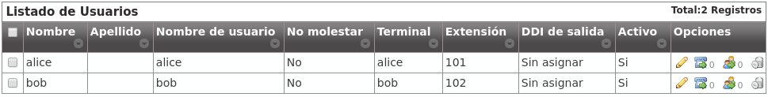

Bloque ‘Configuración de Empresa’¶
Estamos cerca de hacer nuestra primera llamada en nuestro flamente nuevo IvozProvider, solo queda crear 6 cosas dentro de nuestra empresa DemoCompany:
- 2 terminales
- 2 extensiones
- 2 usuarios

Extensiones¶
Seguimos por tanto en la sección de extensiones, pero se nos han adelantado y ya tenemos 2 extensiones para nuestro uso:

Nada por hacer en esta sección tampoco, ¡vamos a la última!
Usuarios¶
Como era de esperar, también tenemos 2 usuarios:
Llegados a este punto y sin necesidad de tocar nada en este bloque, ya tenemos todo listo para hacer una llamada de Alice a Bob.
¿Qué nos falta?¶
Lo único que nos falta es disponer de 2 terminales SIP (hardphone, softphone, Android/IOS APP) y configurarlos como sigue:
ALICE
- Usuario: alice
- Contraseña: alice
- Dominio: users.democompany.com (o la IP si hemos hecho el truco)
BOB
- Usuario: bob
- Contraseña: bob
- Dominio: users.democompany.com (o la IP si hemos hecho el truco)
Truco
Es posible que el usuario y el dominio se nos pida junto, tendremos que introducir alice@users.democompany.com y bob@users.democompany.com, respectivamente (o con la IP si hemos hecho el truco).
Tras configurar los terminales, Alice debería de poder llamar a Bob sin más que marcar 102 en su terminal.